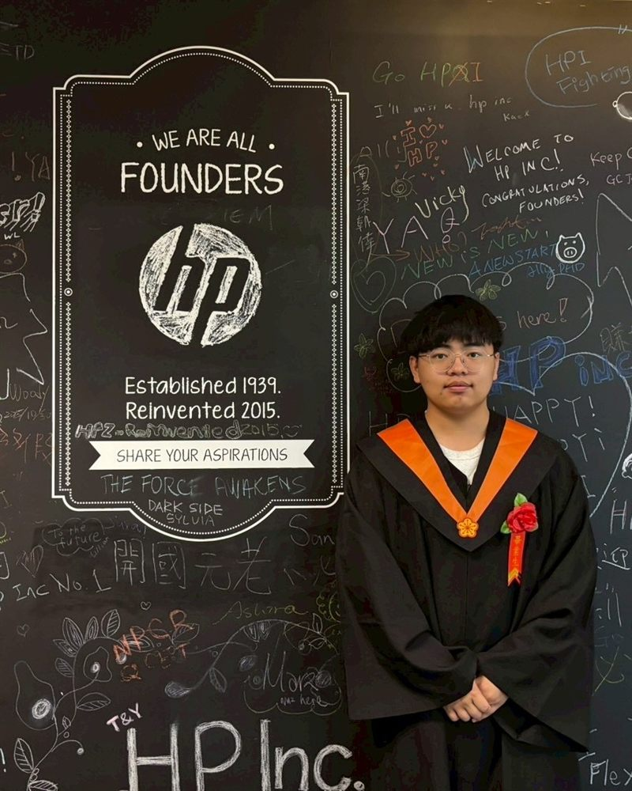

Exploring motor-related EEG activity and responses to score feedback during executed and imagined movement.
My contribution — Collaborative analysis and interpretation, manuscript writing, and figure preparation.
Read projectI’m a research assistant in the BCI Lab at Academia Sinica, working with Dr. Yu-Te Wang. I hold a B.S. in Mechanical Engineering from National Taiwan University.
My research interests are brain–computer interfaces and human–robot interaction, with an interest in using neural, physiological, and behavioral signals to help interactive systems adapt to users’ intentions and states. I am applying to PhD programs for Fall 2027.

Exploring motor-related EEG activity and responses to score feedback during executed and imagined movement.
My contribution — Collaborative analysis and interpretation, manuscript writing, and figure preparation.
Read projectBringing brain, muscle, and gesture inputs together for a mobile robot that retrieves objects.
My contribution — Mobile-base design and fabrication, and gesture-based arm control.
Read projectA controlled motion platform connecting force measurements with optical tracking of regional deformation.
My contribution — Platform design and collaborative marker-trajectory and strain analysis.
Read projectC.-Y. Hong, I. C. Lee, C.-C. Deng, J. P. Hsu, and Y. T. Wang
Submitted to ACM CHI 2027.
Project